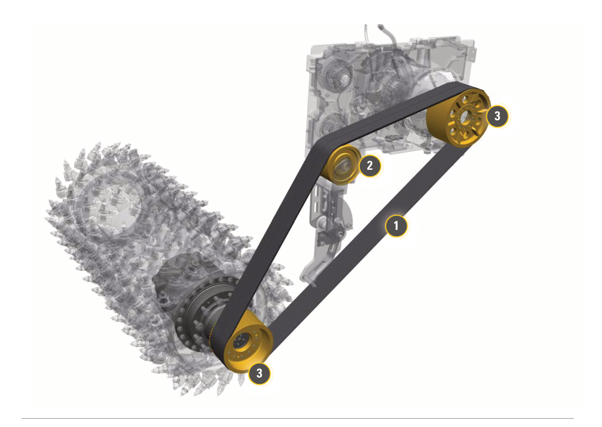
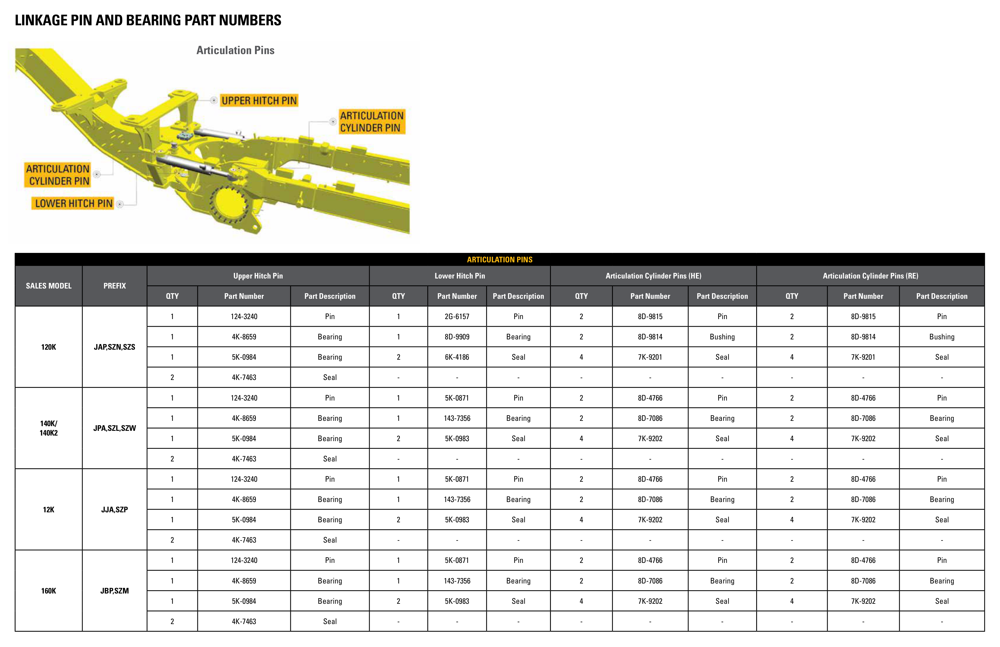
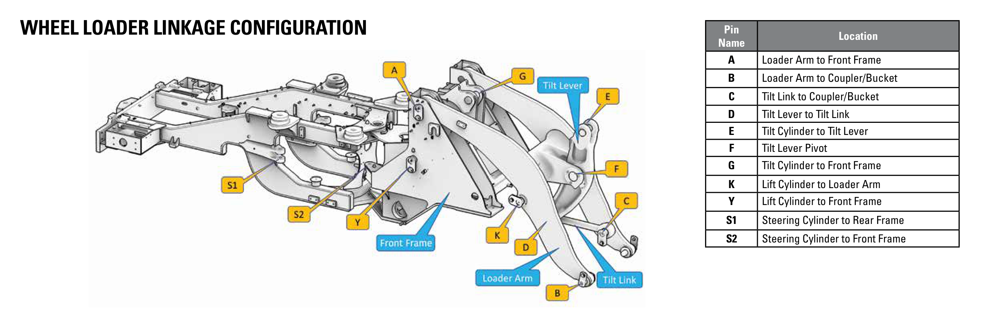
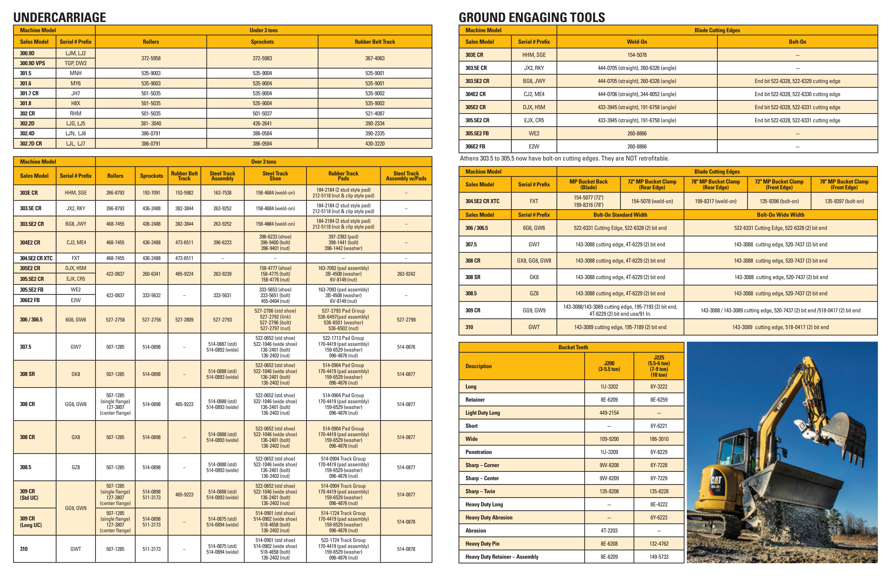
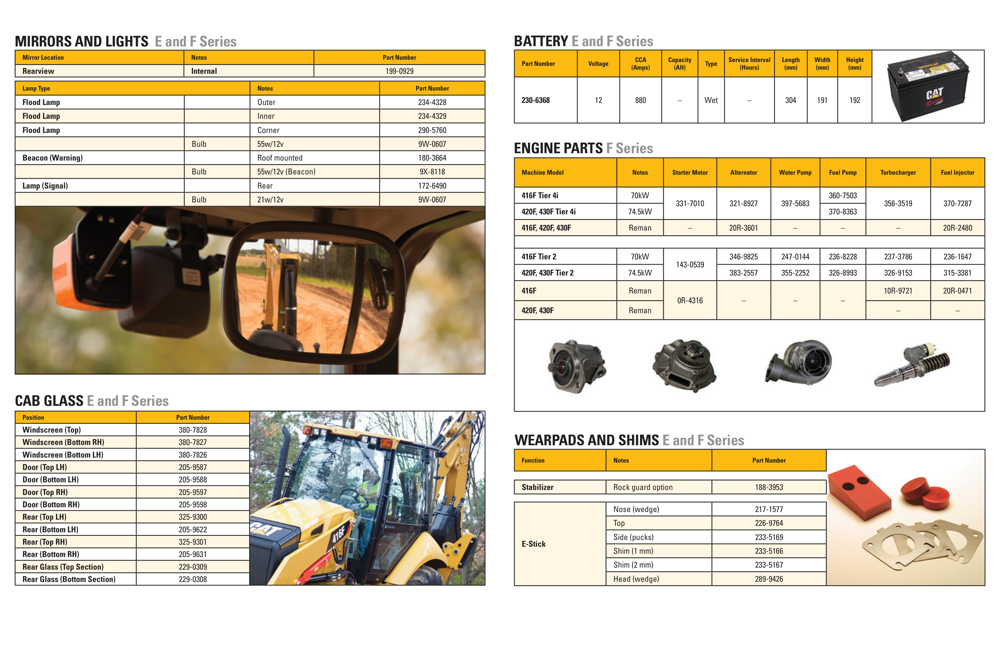

A shared language for the crew
A precise part name helps a crew explain an observation, find the right diagram and check understanding. Follow the leader line to the part. Say its name. Read its function. Then check the model and publication before using the information.
- Find the machine
Record model, serial-number prefix and attachment. - Find the assembly
Use the section title and diagram. - Follow the callout
Match its number, letter or printed label. - Check the match
Confirm model, build and serial range in the source.
These selected diagrams teach component identification. For the complete parts list for a training machine, use its serial-specific parts catalogue. The collection includes two complete roller operation manuals; public parts reference guides list selected parts. See equipment coverage and remaining manual needs.
Use photographs, pointing, reading aloud and partner check-backs as needed. Learners may bring workplace experience or work entirely from these supplied examples. Local Nation-specific language or knowledge is included only through locally chosen participation.
20 illustrated sections
Two main sections of the paver
Conceptual paver example in the 2016 application guide; this picture does not identify a specific machine serial number.

| Mark | Component and meaning |
|---|---|
| screed | ScreedPlaces and shapes the mat behind the tractor. |
| tractor | TractorProvides propulsion, power and material-handling functions. |
Inside the paver: the feeder system
Multiple paver/screed models and build numbers; applicability is specified in individual tables.

| Mark | Component and meaning |
|---|---|
| label | Feeder bed plateWear surface beneath material moving through the feeder system. |
| label | Feeder chain guardProtective wear plate associated with the feeder-chain path. |
| label | Foot shaftShaft at the foot end of the feeder assembly. |
| label | Feeder chainLinked assembly that carries material through the feeder path. |
| label | Head shaftShaft at the head end of the feeder assembly. |
Auger parts: identify the assembly
Multiple paver/screed models and build numbers; applicability is specified in individual tables.

| Mark | Component and meaning |
|---|---|
| label | Auger segmentsSpiral sections that move mixture across the width. |
| label | DeflectorGuides material near the auger assembly. |
| label | Auger bearingsSupport the rotating auger shaft. |
| label | Auger shaftShaft on which the auger segments are mounted. |
Paver contact with the ground
Multiple paver/screed models and build numbers; applicability is specified in individual tables.

| Mark | Component and meaning |
|---|---|
| photo | Smooth beltGround-contact belt used on the illustrated track arrangement. |
| photo | Track padsWear/contact pads on the illustrated track arrangement. |
| photo | Track plowScraper ahead of the track contact area. |
Screed plates and heating components
Multiple paver/screed models and build numbers; applicability is specified in individual tables.

| Mark | Component and meaning |
|---|---|
| label | DeflectorsGuide material at the screed assembly. |
| label | Screed platesLower wear surfaces that contact the placed mixture. |
| label | Nose barsWear components at the leading part of the screed plate arrangement. |
| label | Heating elementsHeat the applicable electrically heated screed components. |
Look inside a tamper-bar screed
Multiple paver/screed models and build numbers; applicability is specified in individual tables.

| Mark | Component and meaning |
|---|---|
| label | DeflectorMaterial-guiding component. |
| label | Tamper bladeWorking element in the tamping assembly. |
| label | Tamper barBar assembly that provides tamping action. |
| label | Wear plateReplaceable wear surface in the illustrated assembly. |
| label | Screed plateSurface that shapes the mat. |
| label | Heating elementHeater for the applicable component. |
| label | Tamper motorDrive component for the tamping system. |
Identify grade and slope sensors
Multiple paver/screed models and build numbers; applicability is specified in individual tables.

| Mark | Component and meaning |
|---|---|
| photo | Sonic grade sensorNon-contact grade-reference sensor. |
| photo | Mechanical grade sensorContacting sensor with a wand/riding shoe. |
| photo | Extendable sonic grade sensorSonic sensor with an extendable mounting arrangement. |
| photo | Extendable mechanical grade sensorMechanical sensor with an extendable mounting arrangement. |
| photo | Slope sensorSensor associated with the transverse beam for slope information. |
Feed sensing and hopper information
Multiple paver/screed models and build numbers; applicability is specified in individual tables.

| Mark | Component and meaning |
|---|---|
| photo | Sonic material feed sensorsSense material around conveyor discharge or auger ends in the applicable arrangement. |
| photo | Paddle material feed sensorsContacting material sensors in the auger chamber. |
| photo | Hopper material level and temperature sensorReports hopper material information on applicable configurations. |
Cutting system: rotor details
Cat System K rotor example. Other rotor systems and retaining arrangements differ; no change-out procedure is taught here.

| Mark | Component and meaning |
|---|---|
| label | Kicker paddlesMove cut material through the rotor system. |
| label | Fastener-free toolholderHolds the applicable cutting tool in the illustrated System K design. |
| detail | Tooth / cutting bitCutting tool that contacts the material being removed. |
Four wear components around the cutting chamber
PM310, PM312, PM313, PM620, PM622, PM820, PM822 and PM825; individual parts/model tables apply.

| Mark | Component and meaning |
|---|---|
| 1 | Anti-slab wear skisWear surfaces associated with the anti-slab arrangement. |
| 2 | Moldboard cutting edgesWear edges at the rear of the cutting chamber. |
| 3 | Sidegate wear skisWear surfaces at the chamber sides. |
| 4 | Inboard grade control wear skiWear ski used with the inboard grade-control arrangement. |
Rotor drive components
PM310, PM312, PM313, PM620, PM622, PM820, PM822 and PM825; individual parts/model tables apply.


| Mark | Component and meaning |
|---|---|
| 1 | Rotor drive beltTransfers drive through the rotor-drive arrangement. |
| 2 | Tensioner idlerIdler on the belt tensioner arm. |
| 3 | SheaveGrooved wheel that interfaces with the rotor drive belt. |
Every numbered component in this conveyor diagram
PM310, PM312, PM313, PM620, PM622, PM820, PM822 and PM825; individual parts/model tables apply.

| Mark | Component and meaning |
|---|---|
| 1 | Guide rollersGuide the conveyor belt. |
| 2 | Trough rollersSupport the belt in a trough shape. |
| 3 | Return idlersSupport the returning portion of the belt. |
| 4 | Tail pulleyPulley at the tail end of the conveyor. |
| 5 | Tail pulley bearingsSupport the tail pulley on both sides. |
| 6 | Bunk rollersSupport the belt in the material-loading area. |
| 7 | Head pulleyPulley associated with the conveyor drive end. |
Every numbered component in this track diagram
PM310, PM312, PM313, PM620, PM622, PM820, PM822 and PM825; individual parts/model tables apply.

| Mark | Component and meaning |
|---|---|
| 1 | Track padsGround-contact pads on this undercarriage. |
| 2 | SprocketsTransfer driving loads into the tracks. |
| 3 | RollersSupport/guide the track arrangement. |
| 4 | IdlersGuide the track at the idler end. |
| 5 | Track shoesInterface with the track pads in this arrangement. |
| 6 | Track chainLinked track assembly that travels around the undercarriage. |
Locate all 19 original roller-control callouts
CB2.5 GC: XGC 1-UP, 640 1-UP; CB2.7 GC: BT7 1-UP, 641 1-UP; CC2.7 GC: 2C7 1-UP, 642 1-UP. Illustration 39 has 1–5; Illustration 40 has 6–19. Optional items retain “if equipped.”

| Mark | Component and meaning |
|---|---|
| 1 | Steering wheelIdentify this exact numbered control or indicator on the source illustration. Its operation and configuration are described in the complete manual. |
| 2 | Right propel controlIdentify this exact numbered control or indicator on the source illustration. Its operation and configuration are described in the complete manual. |
| 3 | Traction Control Switch (if equipped)Identify this exact numbered control or indicator on the source illustration. Its operation and configuration are described in the complete manual. |
| 4 | 12V power receptacleIdentify this exact numbered control or indicator on the source illustration. Its operation and configuration are described in the complete manual. |
| 5 | Left propel control (if equipped)Identify this exact numbered control or indicator on the source illustration. Its operation and configuration are described in the complete manual. |
| 6 | Emergency stop knobIdentify this exact numbered control or indicator on the source illustration. Its operation and configuration are described in the complete manual. |
| 7 | Work lightsIdentify this exact numbered control or indicator on the source illustration. Its operation and configuration are described in the complete manual. |
| 8 | Front/Position lightsIdentify this exact numbered control or indicator on the source illustration. Its operation and configuration are described in the complete manual. |
| 9 | Turn signalIdentify this exact numbered control or indicator on the source illustration. Its operation and configuration are described in the complete manual. |
| 10 | Hazard lightsIdentify this exact numbered control or indicator on the source illustration. Its operation and configuration are described in the complete manual. |
| 11 | Gauges and indicatorsIdentify this exact numbered control or indicator on the source illustration. Its operation and configuration are described in the complete manual. |
| 12 | Parking brakeIdentify this exact numbered control or indicator on the source illustration. Its operation and configuration are described in the complete manual. |
| 13 | HornIdentify this exact numbered control or indicator on the source illustration. Its operation and configuration are described in the complete manual. |
| 14 | Water spray systemIdentify this exact numbered control or indicator on the source illustration. Its operation and configuration are described in the complete manual. |
| 15 | Engine start switchIdentify this exact numbered control or indicator on the source illustration. Its operation and configuration are described in the complete manual. |
| 16 | Vibratory mode / Emulsion switchIdentify this exact numbered control or indicator on the source illustration. Its operation and configuration are described in the complete manual. |
| 17 | Engine speedIdentify this exact numbered control or indicator on the source illustration. Its operation and configuration are described in the complete manual. |
| 18 | BeaconIdentify this exact numbered control or indicator on the source illustration. Its operation and configuration are described in the complete manual. |
| 19 | Digital displayIdentify this exact numbered control or indicator on the source illustration. Its operation and configuration are described in the complete manual. |
Articulation and the steering frame lock
CB2.5 GC: XGC 1-UP, 640 1-UP; CB2.7 GC: BT7 1-UP, 641 1-UP; CC2.7 GC: 2C7 1-UP, 642 1-UP. Read the complete source page for locking/unlocking instructions; this task is identification only.

| Mark | Component and meaning |
|---|---|
| 1 | PinRetaining pin identified in the source illustration. |
| 2 | Eye holeAlignment opening identified in the source illustration. |
| assembly | Steering frame lockMechanical assembly used to restrict articulation under the manual’s specified conditions. |
Motor grader: articulation pins and bearings
12K, 120K, 120K2, 140K, 140K2 and 160K; model and serial-prefix table applies.


Read the original table headings and model/serial qualifiers in this complete source page. Open the image or PDF to magnify the small text. Keep each part number with its model and table column.
Wheel loader: all 11 lettered pin locations
950M/962M; cover lists EMB, KSA, FTR, NHL, J1S, XCJ, EJB, RKH, F2T, K88, J2S, JYD.


| Mark | Component and meaning |
|---|---|
| A | Loader arm to front framePin joining the two named components; locate the matching letter on the diagram. |
| B | Loader arm to coupler/bucketPin joining the two named components; locate the matching letter on the diagram. |
| C | Tilt link to coupler/bucketPin joining the two named components; locate the matching letter on the diagram. |
| D | Tilt lever to tilt linkPin joining the two named components; locate the matching letter on the diagram. |
| E | Tilt cylinder to tilt leverPin joining the two named components; locate the matching letter on the diagram. |
| F | Tilt lever pivotPin joining the two named components; locate the matching letter on the diagram. |
| G | Tilt cylinder to front framePin joining the two named components; locate the matching letter on the diagram. |
| K | Lift cylinder to loader armPin joining the two named components; locate the matching letter on the diagram. |
| Y | Lift cylinder to front framePin joining the two named components; locate the matching letter on the diagram. |
| S1 | Steering cylinder to rear framePin joining the two named components; locate the matching letter on the diagram. |
| S2 | Steering cylinder to front framePin joining the two named components; locate the matching letter on the diagram. |
Mini excavator: undercarriage parts and model table
Cat 300–310 family; exact model and serial-prefix tables apply.


Read the original table headings and model/serial qualifiers in this complete source page. Open the image or PDF to magnify the small text. Keep each part number with its model and table column.
Backhoe loader: glass, lighting, wear and engine parts
F Series backhoe loaders; listed E/F ground-engaging-tool combinations and model tables control coverage.


Read the original table headings and model/serial qualifiers in this complete source page. Open the image or PDF to magnify the small text. Keep each part number with its model and table column.
Articulated truck: dump-body liner locations
725, 730, 730 EJ, 735, 740 GC, 740 EJ, 745; listed 3T/3F serial prefixes.

Read the original table headings and model/serial qualifiers in this complete source page. Open the image or PDF to magnify the small text. Keep each part number with its model and table column.
Build the record for your actual machine
Record manufacturer, model, complete product identification/serial number, attachment model, publication number, revision, applicable serial range, diagram group and callout. A similar-looking machine is a starting point for a search; it is not enough to choose a part number.
Use Cat Parts Diagrams and the Cat service-manual route. Confirm any required account or dealer access through the provider. Keep the applicable operation manual beside the parts catalogue.
Download the 89-row component register · Figure provenance and crop record · Coverage by machine family